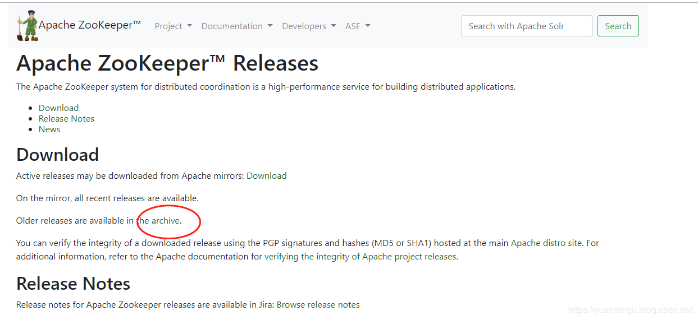
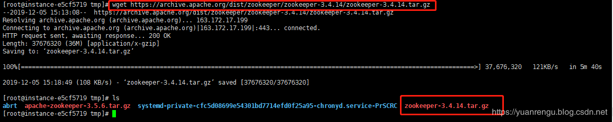
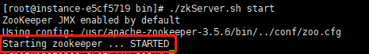
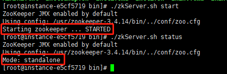
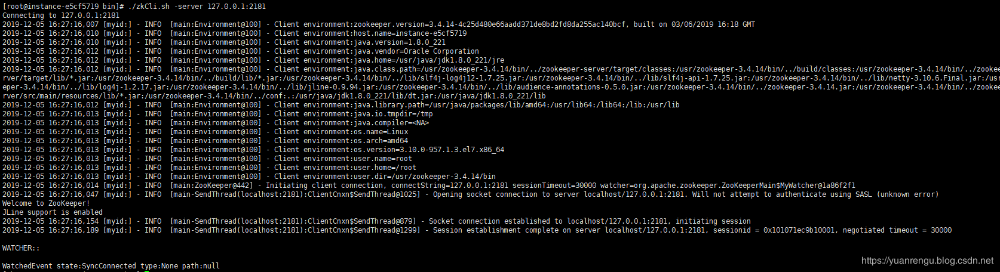
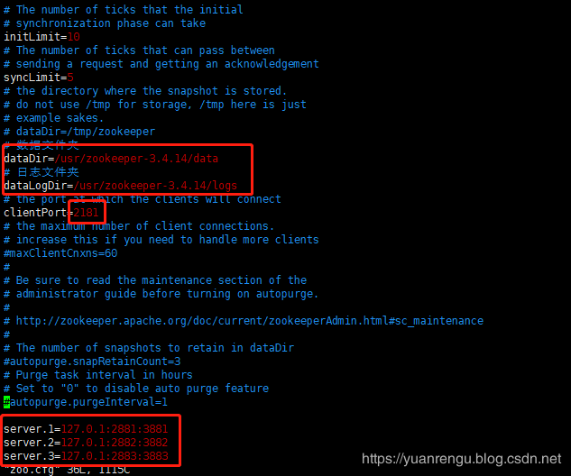
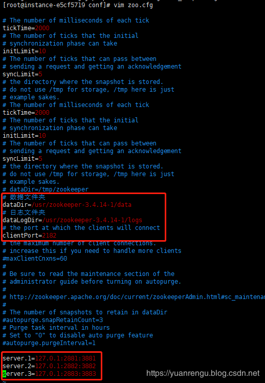
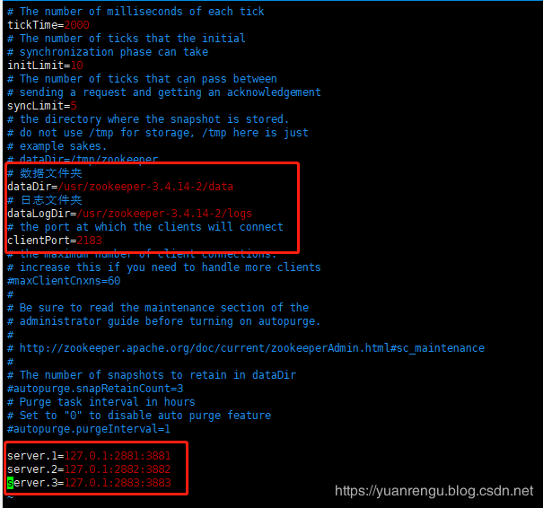
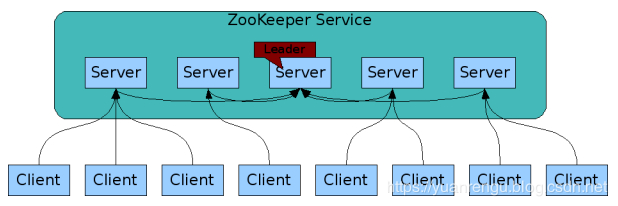

原文连接:https://www.cnblogs.com/heyonggang/p/12048060.html
ZooKeeper安装模式主要有3种：
- 单机版（Standalone模式）模式：仅有一个ZooKeeper服务
- 伪集群模式：单机多个ZooKeeper服务
- 集群模式：多机多ZooKeeper服务
1 单机版（Standalone模式）安装
ZooKeeper官网下载地址：http://zookeeper.apache.org/releases.html#download
如图所示进行操作：

注意一点，如果不想当小白鼠，请务必下稳定版（stable release），非稳定版安装时可能出各种未知的异常。

以3.4.14版本为例，在Centos系统下进行安装,之前写一些软件的安装教程时，有人留言说希望把安装的步骤尽量详细化，包括安装路径也要带上，做到可以照着教程复制操作。这个要求有点，呵呵，满足你！
1.1 下载安装包
输入如下命令：
wget https://archive.apache.org/dist/zookeeper/zookeeper-3.4.14/zookeeper-3.4.14.tar.gz如下图：

1.2 解压安装包
tar -zxvf apache-zookeeper-3.4.14.tar.gz解压完成后，将解压包移动到/usr目录：
mv apache-zookeeper-3.4.14 /usr/并将apache-zookeeper-3.4.14重命名为zookeeper-3.4.14。
至此可以看到ZooKeeper的目录结构如下：
[root@instance-e5cf5719 zookeeper-3.4.14]# ls
bin data ivy.xml logs README.md zookeeper-3.4.14.jar zookeeper-3.4.14.jar.sha1 zookeeper-docs zookeeper-recipes
build.xml dist-maven lib NOTICE.txt README_packaging.txt zookeeper-3.4.14.jar.asc zookeeper-client zookeeper-it zookeeper-server
conf ivysettings.xml LICENSE.txt pom.xml src zookeeper-3.4.14.jar.md5 zookeeper-contrib zookeeper-jute- bin目录——zk的可执行脚本目录，包括zk服务进程，zk客户端，等脚本。其中，.sh是Linux环境下的脚本，.cmd是Windows环境下的脚本。
- conf目录——配置文件目录。zoo_sample.cfg为样例配置文件，需要修改为自己的名称，一般为zoo.cfg。log4j.properties为日志配置文件。
1.3 设置zoo.cfg
进入/usr/zookeeper-3.4.14/conf目录，可以看到zoo_sample.cfg，这是样例配置文件，需要修改为自己的，一般命令为zoo.cfg 。
cp zoo_sample.cfg zoo.cfg可以看看zoo.cfg文件里的内容：
# The number of milliseconds of each tick
tickTime=2000
# The number of ticks that the initial
# synchronization phase can take
initLimit=10
# The number of ticks that can pass between
# sending a request and getting an acknowledgement
syncLimit=5
# the directory where the snapshot is stored.
# do not use /tmp for storage, /tmp here is just
# example sakes.
dataDir=/tmp/zookeeper
# the port at which the clients will connect
clientPort=2181
# the maximum number of client connections.
# increase this if you need to handle more clients
#maxClientCnxns=60
#
# Be sure to read the maintenance section of the
# administrator guide before turning on autopurge.
#
# http://zookeeper.apache.org/doc/current/zookeeperAdmin.html#sc_maintenance
#
# The number of snapshots to retain in dataDir
#autopurge.snapRetainCount=3
# Purge task interval in hours
# Set to "0" to disable auto purge feature
#autopurge.purgeInterval=1看着好复杂的感觉，其实去掉注释后，就只有几行而已：
tickTime=2000
initLimit=10
syncLimit=5
dataDir=/tmp/zookeeper
clientPort=2181- tickTime=2000 ：通俗点叫
滴答时间，就是心跳间隔，默认是2000毫秒，即每隔两秒心跳一次。- tickTime用于客户端与服务器或服务器与服务器之间维持心跳的时间度量单位，即每隔tickTime会发送一次心跳。
- 心跳的作用：
- 监听机器的工作状态。
- 通过心跳来控制follower跟leader的通信时间，默认情况下他们（follower和leader）的会话时长是心跳间隔的两倍，即2 * tickTime。
- initLimit=10：follower在启动过程中，会从leader同步所有最新数据，然后确定自己能够对外服务的起始状态，leader允许follower在initLimit时间内完成工作。默认值是10，即10*tickTime。默认情况下不需要修改该配置项，随着ZooKeeper集群管理的数量不断增大，follower节点在启动的时候，从leader节点进行数据同步的时间也会相应变长，于是无法在较短的时间内完成数据同步，在这种情况下，需要适当调大这个参数。
- syncLimit=5：leader节点和follower节点进行心跳检测的最大延迟时间。在ZooKeeper集群中，leader节点会与所有的follower节点进行心跳检测来确认节点是否存活。默认值为5，即5*tickTime。
- dataDir=/tmp/zookeeper：ZooKeeper服务器存储快照文件的默认目录。/tmp目录下的文件可能被自动删除，容易丢失，需要修改存放目录。
- clientPort=2181: 客户端连接ZooKeeper服务器的端口。ZooKeeper会监听这个端口，接收客户端的访问请求。
温馨提示:大家一定要学会看官方文档，去接收第一手资料。虽然是英文，但用词和语法都比较简单，很容易看懂。
官网介绍如下：
- tickTime : the basic time unit in milliseconds used by ZooKeeper. It is used to do heartbeats and the minimum session timeout will be twice the tickTime.
- dataDir : the location to store the in-memory database snapshots and, unless specified otherwise, the transaction log of updates to the database.
- clientPort : the port to listen for client connections
在zookeeper-3.4.14目录下创建data和logs文件，如下：
[root@instance-e5cf5719 zookeeper-3.4.14]# mkdir data
[root@instance-e5cf5719 zookeeper-3.4.14]# mkdir logs官方文档也有对此进行说明，指出在生产环境中ZooKeeper是会长期运行的，ZooKeeper的存储就需要专门的文件位置进行存储dataDir和logs。data文件夹用于存放内存数据库快照，集群的myid文件也是存放在这个文件夹下。
For long running production systems ZooKeeper storage must be managed externally (dataDir and logs).
修改后的zoo.cfg如下：
# The number of milliseconds of each tick
tickTime=2000
# The number of ticks that the initial
# synchronization phase can take
initLimit=10
# The number of ticks that can pass between
# sending a request and getting an acknowledgement
syncLimit=5
# the directory where the snapshot is stored.
# do not use /tmp for storage, /tmp here is just
# example sakes.
# dataDir=/tmp/zookeeper
# 数据文件夹
dataDir=/usr/zookeeper-3.4.14/data
# 日志文件夹
dataLogDir=/usr/zookeeper-3.4.14/logs
# the port at which the clients will connect
clientPort=2181
# the maximum number of client connections.
# increase this if you need to handle more clients
#maxClientCnxns=60
#
# Be sure to read the maintenance section of the
# administrator guide before turning on autopurge.
#
# http://zookeeper.apache.org/doc/current/zookeeperAdmin.html#sc_maintenance
#
# The number of snapshots to retain in dataDir
#autopurge.snapRetainCount=3
# Purge task interval in hours
# Set to "0" to disable auto purge feature
#autopurge.purgeInterval=11.4 启动
进入ZooKeeper的bin目录：
[root@instance-e5cf5719 zookeeper-3.4.14]# cd bin/
[root@instance-e5cf5719 bin]# ls
README.txt zkCleanup.sh zkCli.cmd zkCli.sh zkEnv.cmd zkEnv.sh zkServer.cmd zkServer.sh zkTxnLogToolkit.cmd zkTxnLogToolkit.sh zookeeper.out- zkCleanup.sh ：用于清理ZooKeeper的历史数据，包括事务日志文件与快照数据文件
- zkCli.sh：连接ZooKeeper服务器的命令行客户端
- zkEnv.sh：设置环境变量
- zkServer.sh：启动ZooKeeper服务器
启动ZooKeeper：
./zkServer.sh start成功启动如下图所示：

可以查看ZooKeeper的状态：
./zkServer.sh status状态信息如下图所示：

可以通过help看看./zkServer.sh下的命令
[root@instance-e5cf5719 bin]# ./zkServer.sh help
ZooKeeper JMX enabled by default
Using config: /usr/zookeeper-3.4.14/bin/../conf/zoo.cfg
Usage: ./zkServer.sh {start|start-foreground|stop|restart|status|upgrade|print-cmd}- start: 启动，用于后台启动ZooKeeper服务器
- start-foreground: 前台启动服务器
- stop：停止
- restart：重启
- status：获取状态
- upgrade：升级
- print-cmd ： 打印ZooKeeper程序命令行及相关参数
1.5 连接ZooKeeper客户端
进行连接：
./zkCli.sh -server 127.0.0.1:2181即
./zkCli.sh -server <ip>:<port>结果如下：

可以通过help获取更多的相关命令：
[zk: 127.0.0.1:2181(CONNECTED) 0] help
ZooKeeper -server host:port cmd args
stat path [watch]
set path data [version]
ls path [watch]
delquota [-n|-b] path
ls2 path [watch]
setAcl path acl
setquota -n|-b val path
history
redo cmdno
printwatches on|off
delete path [version]
sync path
listquota path
rmr path
get path [watch]
create [-s] [-e] path data acl
addauth scheme auth
quit
getAcl path
close
connect host:port| 命令 | 描述 |
|---|---|
| help | 显示所有操作命令 |
| stat | 查看节点状态，即判断节点是否存在 |
| set | 更新节点数据 |
| get | 获取节点数据 |
| ls path [watch] | 使用 ls 命令来查看当前znode的内容 |
| create | 普通创建 ; -s 含有序列;-e 临时（重启或者超时消失） |
| delete | 删除节点 |
| rmr | 递归删除节点 |
可以对相关的命令进行一些简单的测试，先创建一个新znode（运行create /zk_test my_data ），里面附带的信息为“my_data”.
[zk: 127.0.0.1:2181(CONNECTED) 1] create /zk_test my_data
Created /zk_test
[zk: 127.0.0.1:2181(CONNECTED) 2] ls /
[zookeeper, zk_test]可以看到zk_test创建成功了。可以通过get命令看看zk_test节点里的信息：
[zk: 127.0.0.1:2181(CONNECTED) 3] get /zk_test
my_data
cZxid = 0x7
ctime = Thu Dec 05 16:32:20 CST 2019
mZxid = 0x7
mtime = Thu Dec 05 16:32:20 CST 2019
pZxid = 0x7
cversion = 0
dataVersion = 0
aclVersion = 0
ephemeralOwner = 0x0
dataLength = 7
numChildren = 0通过set可以修改zk_test里的信息。
[zk: 127.0.0.1:2181(CONNECTED) 4] set /zk_test junk
cZxid = 0x7
ctime = Thu Dec 05 16:32:20 CST 2019
mZxid = 0x8
mtime = Thu Dec 05 16:37:03 CST 2019
pZxid = 0x7
cversion = 0
dataVersion = 1
aclVersion = 0
ephemeralOwner = 0x0
dataLength = 4
numChildren = 0
[zk: 127.0.0.1:2181(CONNECTED) 5] get /zk_test
junk
cZxid = 0x7
ctime = Thu Dec 05 16:32:20 CST 2019
mZxid = 0x8
mtime = Thu Dec 05 16:37:03 CST 2019
pZxid = 0x7
cversion = 0
dataVersion = 1
aclVersion = 0
ephemeralOwner = 0x0
dataLength = 4
numChildren = 0通过delete可以删除节点。
[zk: 127.0.0.1:2181(CONNECTED) 6] delete /zk_test
[zk: 127.0.0.1:2181(CONNECTED) 7] ls /
[zookeeper]2 伪集群搭建
我们搭建3个ZooKeeper来构建伪集群。上面我们已经搭建了zookeeper-3.4.14，现在将它复制两份，命名为zookeeper-3.4.14-1，zookeeper-3.4.14-2。
[root@instance-e5cf5719 usr]# cp -r zookeeper-3.4.14 zookeeper-3.4.14-1
[root@instance-e5cf5719 usr]# cp -r zookeeper-3.4.14 zookeeper-3.4.14-2此时3个ZooKeeper文件是一模一样的，构建伪集群需要对每个ZooKeeper的配置文件做一点小修改。
对3个ZooKeeper中/conf/zoo.cfg进行修改，主要是修改3个位置：端口号、日志路径、集群配置。



在zoo.cfg配置中，添加了一组server配置，表示ZooKeeper集群中有3个节点，server的配置格式如下：
server.<myid>=<IP>:<Port1>:<Port2>myid：是节点的编号，该编号的取值范围是1-255之间的整数，且在集群中必须唯一。IP：表示节点所在的IP地址，如在本地环境为127.0.0.1或localhost。Port1:leader节点与follower节点进行心跳检测与数据同步时所使用的端口。Port2：在进行leader选举的过程中，用于投票通信的端口。
如果是伪集群的配置方式，由于 ip 都是一样，所以不同的 Zookeeper 实例通信端口号不能一样，要给它们分配不同的端口号。
在每个ZooKeeper文件的/data目录下分别创建一个myid文件，myid文件里只需有服务器编号（如1，2, 3）。
分别启动三个ZooKeeper服务（开启3个窗口来启动服务）。
结果如下：
- zookeeper-3.4.14
[root@instance-e5cf5719 bin]# ./zkServer.sh start
ZooKeeper JMX enabled by default
Using config: /usr/zookeeper-3.4.14/bin/../conf/zoo.cfg
Starting zookeeper ... STARTED
[root@instance-e5cf5719 bin]# ./zkServer.sh status
ZooKeeper JMX enabled by default
Using config: /usr/zookeeper-3.4.14/bin/../conf/zoo.cfg
Mode: follower- zookeeper-3.4.14-1
[root@instance-e5cf5719 bin]# ./zkServer.sh start
ZooKeeper JMX enabled by default
Using config: /usr/zookeeper-3.4.14-1/bin/../conf/zoo.cfg
Starting zookeeper ... STARTED
[root@instance-e5cf5719 bin]# ./zkServer.sh status
ZooKeeper JMX enabled by default
Using config: /usr/zookeeper-3.4.14-1/bin/../conf/zoo.cfg
Mode: leader- zookeeper-3.4.14-2
[root@instance-e5cf5719 bin]# ./zkServer.sh start
ZooKeeper JMX enabled by default
Using config: /usr/zookeeper-3.4.14-2/bin/../conf/zoo.cfg
Starting zookeeper ... STARTED
[root@instance-e5cf5719 bin]# ./zkServer.sh status
ZooKeeper JMX enabled by default
Using config: /usr/zookeeper-3.4.14-2/bin/../conf/zoo.cfg
Mode: follower通过查看状态可以看到zookeeper-3.4.14-1是leader，zookeeper-3.4.14和zookeeper-3.4.14-2是follower。
可以参考官网的架构图来辅助理解。

将zookeeper-3.4.14-1停掉，来观察下leader的重新选举。
[root@instance-e5cf5719 bin]# ./zkServer.sh stop
ZooKeeper JMX enabled by default
Using config: /usr/zookeeper-3.4.14-1/bin/../conf/zoo.cfg
Stopping zookeeper ... STOPPED分别查看zookeeper-3.4.14和zookeeper-3.4.14-2的状态。
[root@instance-e5cf5719 bin]# ./zkServer.sh status
ZooKeeper JMX enabled by default
Using config: /usr/zookeeper-3.4.14/bin/../conf/zoo.cfg
Mode: follower[root@instance-e5cf5719 bin]# ./zkServer.sh status
ZooKeeper JMX enabled by default
Using config: /usr/zookeeper-3.4.14-2/bin/../conf/zoo.cfg
Mode: leader可以看到zookeeper-3.4.14-2成为了leader。
3 集群模式搭建
集群模式搭建跟伪集群非常相似，只是集群的ZooKeeper是部署在不同的机器，伪集群的ZooKeeper是部署在同一台机器，在对/conf/zoo.cfg进行修改时，因为是不同的机器（ip不同），可以不用修改端口号。除了这一点差别外，其它的搭建方式跟伪集群一模一样，就不做多介绍了。
4 总结
至此我们完成ZooKeeper单机版、伪集群和集群环境的搭建。在生产环境上为了确保ZooKeeper的高可用，务必要搭建集群环境。